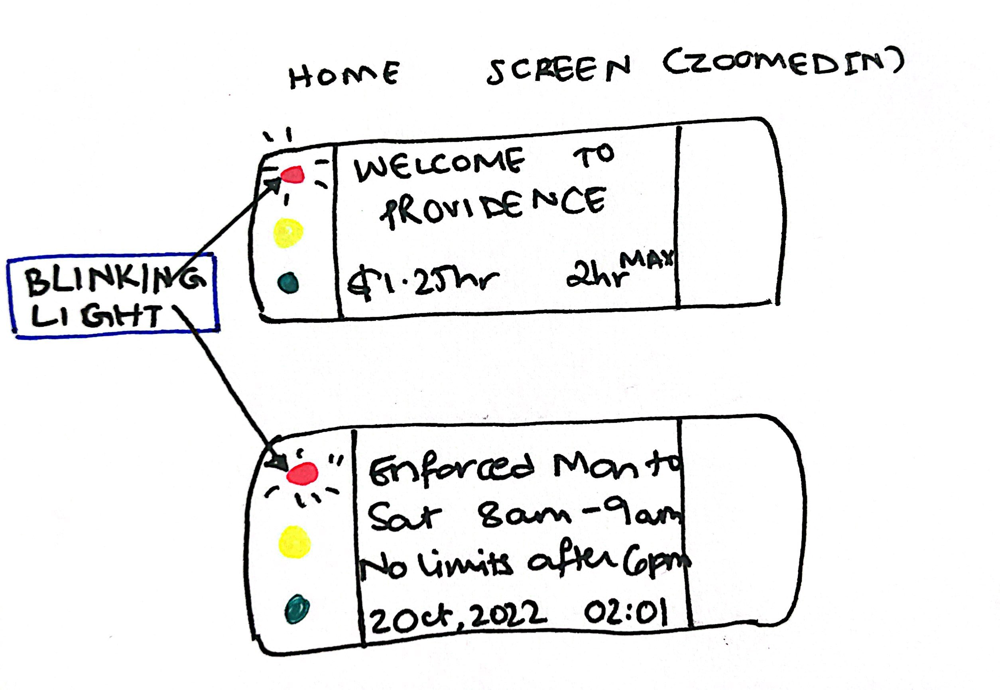
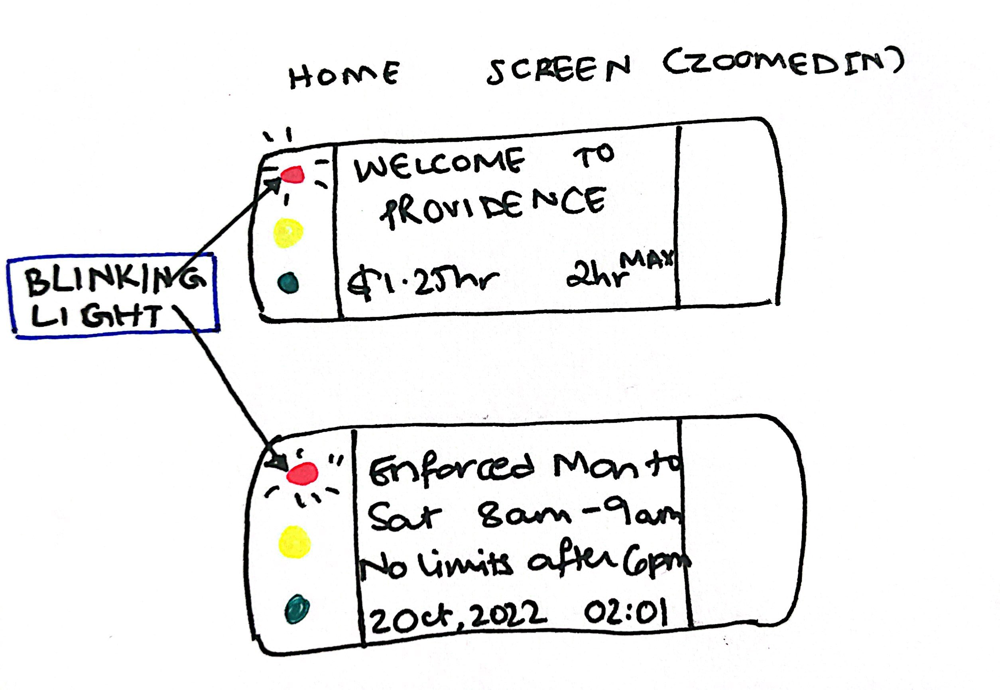

Personas and Storyboarding
Introduction
When we look at the world around us, we often don't realize that each object/machine/set-up is an interface that was specifically designed to suit our needs and intentionally built with specific users in mind.Each interface prompts certain behavior and a story follows...
Thinking about the ways in which we interact with the world around us led me to pay more attention to interfaces I use everyday. It got me wondering whether they were built for me and who else they could've been built for.
One such interface that caught my attention was that of the parking meter. The variation in the design of this interface as I have witnessed across locations, with a variety of controls led me to look into its nuances further.
My Approach: the Parking Meter Interface
The parking meter on Thayer Street was one that particularly caught my attention. It is an interface used to buy tickets to park in designated spots
on the street during specific hours of the days mentioned as per city policy. The interface solves this problem in a self-serving manner
(without a ticket collector needing to be present).
The interface include 2 navigation arrows to "scroll" through options of payment (coins and card), coin/card slots, a confirmation button marked by a
tick, a cancel button marked by a cross, a home screen with general information including date/time/parking policy, a payment screen and a slot to collect the ticket.
The key components are annotated in the first diagram with a zoomed in version of the home screen in the next section. The user is meant to read the policy on the home screen,
input money into the designated slots, navigate to the time limit they desire, confirm the payment and receive the ticket from the designated slot.
I wanted to explore the different ways in which other people might experience this interface so I sat by the corner of a parking meter on Thayer Street and observed/interacted with the
first 3 users that came by.

Interactions and Observations
Patterns and Key Observations
- The 3 users (say User 1, User 2, User 3) were a middle-aged man, a woman in her 20s, and a man in his 20s respectively.
- Out of three of the users, User 1 and User 2 used coins for payment straight; User 1 had five quarters ready in-hand before approaching the parking meter.
- User 2 restarted the transaction midway, consecutively pressing the cancel button a few times
- User 3 tried to use a card and was interacting with his phone on the designated PVD311 App for 2-3 minutes. He was the only one who scanned the barcode on the meter.
- Only User 3 stopped to read the home screen before proceeding with the transaction.
- None of the users seemed to interact much with the arrow buttons nor attempted to touch the lower screen as pictured below.
The following was the home screen as seen by the users while in use. The instructions rotated, displaying the policy as mentioned in the previous section.
 

Questions and Summarized Answers
(1) How long did you expect your interaction with the parking meter to take? How long did your interaction last?
(2) Have you used a parking meter before? If yes, how did this parking meter compare to those you've used before?
(3) Which features (if any) of the interface were helpful and which features (if any) were challenging to users?
(4) How would you rate your overall experience from 1-10 (10 being the best)? Do you think the interface was effective?
(5) How could the experience be improved to better tend to your needs?
Personas
From the above interactions and observations, I was able to create two personas that I thought encapsulated the problems that the users had with the interface. These two personas are College-kid Cam and Meticulous Melissa.
College-kid Cam Brown
Cam, a college-kid, just moved off-campus; he drives to campus daily. Today Cam is running late for his 8am and is struggling to understand how to use his credit card as he doesn't carry much cash/coins.

- This persona is unable to scan the barcode for the credit card payment and finds it difficult to follow along the lengthy instructions regarding the app needed for this mode of payment.
- Like most on the college-going kids on Thayer, Cam does not carry cash or coins and is struggling to find change for the machine, due to its poor support/instructions for credit cards.
- Cam struggles to use the screen to get better instructions as they are not touch sensitive nor do they have more than 4 controls, most of which he finds unhelpful.
- Cam represents a fair majority of the users interacting with the parking meters on Thayer as it is in the center of the college campus, next to most of the academic buildings.
- Cam is always running to some place or the other and hopes for transactions to be as simple as a tap of a credit card, as most places have support in present day
- Cam is inpired by my interactions with and observations of Users 3 and 2 in their struggle to use the credit card mode of payment and navigate the controls respectively
Meticiulous Melissa Smith
Melissa, a middle-aged woman, collects exact change and counts the coins as she inserts them. After sunset, she's tired from work and cannot tell if she dropped a coin or inserted it as the display can't be seen.

- This persona is forced to be overly meticuluous with the number of quarters she carries as the display showing the amount inserted is grainy and dark.
- Melissa's to-do list has 2 extra tedious items of carrying/collecting quarters due to the lack of credit card support and carrying around reading glasses for the display.
- After a long day of work, she's faced with another task of remembering ot count the exact number of quarters she inputs into the machine and has to be extra careful not to drop any as she would have no way of knowing.
- Melissa is like many middle-aged professors and residents that live in the area who are probably in the same age range and have poor vision as a result. She is also like maky parents of college-kids who park on Thayer when visiting.
- Cam is always running to some place or the other and hopes for transactions to be as simple as a tap of a credit card, as most places have support in present day
Storyboard
Here, I explore the authentic experience of one of the personas mentioned above in the form of a storyboard. The persona I'm focusing on is that of Meticulous Melissa.
She pre-empts the parking and paying process and keeps her reading glasses and exact change ready so as to compensate for the lack of support the parking meter has.
She squints to see if the correct number of coins are inputted as the brightness of the second screen is low and finally proceeds home after a long day of work.